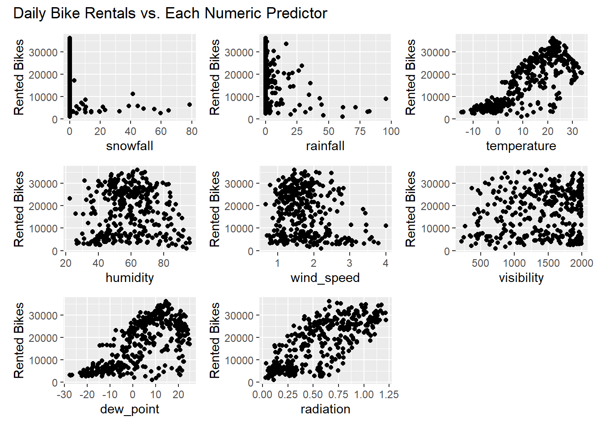
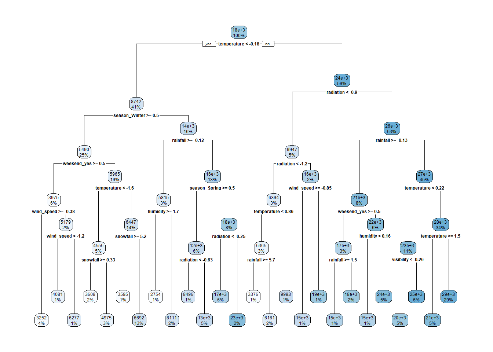
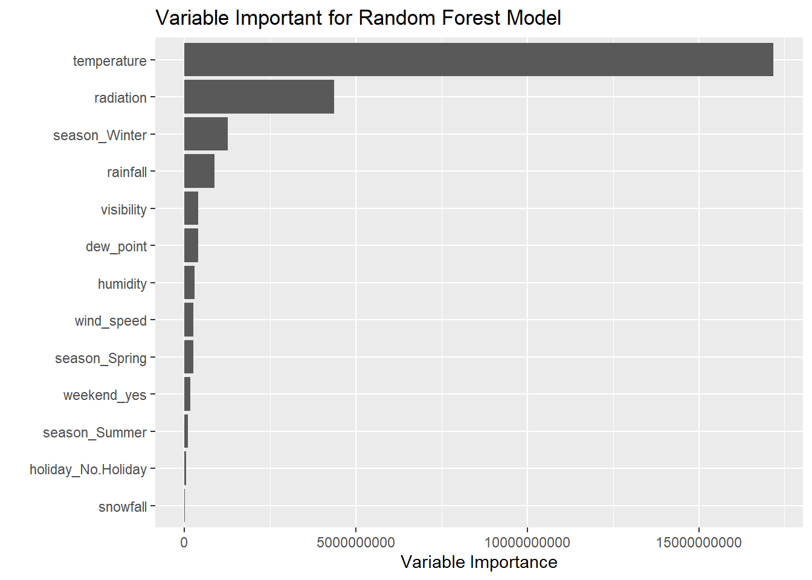

The goal of this work is to practice fitting models and evaluating the predictive ability of those models within the tidymodels framework. For this practice, we will use bike share rental data from the Seoul bike share program. The goal will be to effectively predict daily bike share rentals.
Note that this file includes the work I completed for Homework 8.
Loading Packages
Before getting started, we need to load in some packages.
#Loading packageslibrary(tidyverse)
Warning: package 'tidyverse' was built under R version 4.3.3
Warning: package 'tidyr' was built under R version 4.3.3
Warning: package 'purrr' was built under R version 4.3.3
Warning: package 'dplyr' was built under R version 4.3.3
Warning: package 'forcats' was built under R version 4.3.3
Warning: package 'lubridate' was built under R version 4.3.3
── Attaching core tidyverse packages ──────────────────────── tidyverse 2.0.0 ──
✔ dplyr 1.1.4 ✔ readr 2.1.5
✔ forcats 1.0.0 ✔ stringr 1.5.1
✔ ggplot2 4.0.0 ✔ tibble 3.2.1
✔ lubridate 1.9.3 ✔ tidyr 1.3.1
✔ purrr 1.0.4
── Conflicts ────────────────────────────────────────── tidyverse_conflicts() ──
✖ dplyr::filter() masks stats::filter()
✖ dplyr::lag() masks stats::lag()
ℹ Use the conflicted package (<http://conflicted.r-lib.org/>) to force all conflicts to become errors
Warning: package 'kableExtra' was built under R version 4.3.3
Attaching package: 'kableExtra'
The following object is masked from 'package:dplyr':
group_rows
library(patchwork)library(rsample)library(glmnet)
Warning: package 'glmnet' was built under R version 4.3.3
Loading required package: Matrix
Warning: package 'Matrix' was built under R version 4.3.3
Attaching package: 'Matrix'
The following objects are masked from 'package:tidyr':
expand, pack, unpack
Loaded glmnet 4.1-8
library(baguette)
Warning: package 'baguette' was built under R version 4.3.3
library(ranger)
Warning: package 'ranger' was built under R version 4.3.3
library(vip)
Warning: package 'vip' was built under R version 4.3.3
Attaching package: 'vip'
The following object is masked from 'package:utils':
vi
#Ensuring we don't print in scientific notationoptions(scipen =999,pillar.sigfig =7)
Reading in Data
Now we will read in the Seoul bike share data. In the code chunk below, note that we must specify that the encoding is “latin1” in order to read in the data without error.
Rows: 8760 Columns: 14
── Column specification ────────────────────────────────────────────────────────
Delimiter: ","
chr (4): Date, Seasons, Holiday, Functioning Day
dbl (10): Rented Bike Count, Hour, Temperature(°C), Humidity(%), Wind speed ...
ℹ Use `spec()` to retrieve the full column specification for this data.
ℹ Specify the column types or set `show_col_types = FALSE` to quiet this message.
Exploratory Data Analysis
Checking the Data
Before we model the data, we need to do some standard validation checks.
First, we will check whether any of the variables have missing values.
#Capturing number of missing values by variablebike_share_data |>summarize(across(everything(),~sum(is.na(.x))))
Outside of Date being a character instead of a date, and Seasons,Holiday, and Functioning Day being character types instead of factors, things look good! We can address those issues in a bit.
A tricky variable is Hour, as it is “circular”; hour 23 of one day is only 60 minutes from hour 0 of the next day. We will go ahead and convert this to a factor to be safe.
#Converting Hour to a factor variablebike_share_data<-bike_share_data |>mutate(Hour =factor(Hour))
As additional validity checks, we will explore the values of each variable. To do so, we will generate basic summary statistics for the numeric variables and list the distinct values of the categorical variables.
#Generating basic summary statistics for the numeric variablesbike_share_data |>summarize(across(where(is.numeric),list("mean"= mean,"median"= median,"sd"= sd,"IQR"= IQR,"min"= min,"max"= max),.names ="{.fn}__{.col}")) |>pivot_longer(everything(),names_to =c(".value", "variable"),names_sep ="__")
Looking at the summary statistics for the numeric variables, nothing seems particularly concerning. However, I admit that I am not very knowledgeable of the normal range for solar radiation.
For the categorical variables, we won’t worry about Date; we will check the range of this variable once we convert is to a date type.
#Listing unique values of the categorical and factor variables excluding Datebike_share_data |>select(Hour, Seasons, Holiday, `Functioning Day`) |>map(unique)
#Extracting min and maxbike_share_data |>summarize(min =min(Date),max =max(Date))
# A tibble: 1 × 2
min max
<date> <date>
1 2017-12-01 2018-11-30
Looking at the structure as well as the endpoints of the date range, everything looks good! It seems we have a year of data starting on December 12, 2017, and ending on November 30, 2018.
Let’s convert the remaining character types to factors. Given the current values are generally informative, we won’t worry about creating any new labels for the levels.
#Converting character types to factorsbike_share_data<-bike_share_data |>mutate(across(where(is.character),factor))
Before we move on to exploring our data more deeply, let’s convert the names to ones that are more R-friendly and consistent.
#Converting to more friendly variable namesbike_share_data<-bike_share_data |>rename(date = Date,rented_count =`Rented Bike Count`,hour = Hour,temperature =`Temperature(°C)`,humidity =`Humidity(%)`,wind_speed =`Wind speed (m/s)`,visibility =`Visibility (10m)`,dew_point =`Dew point temperature(°C)`,radiation =`Solar Radiation (MJ/m2)`,rainfall =`Rainfall(mm)`,snowfall =`Snowfall (cm)`,season = Seasons,holiday = Holiday,functional =`Functioning Day`)
Summarizing the Hourly Data
We’ve already produced overall summary statistics for our numeric variables. In doing so, we saw that there were roughly 705 bikes rented each hour, on average. We also saw that there was a substantial amount of variation with the standard deviation being nearly as large as the mean (645 bikes).
Now, let’s generate the same summary statistics for our variable of interest (number of bikes rented) by levels of season, holiday, and functional.
To start, we will summarize rental counts across levels of the functioning indicator, as it may reflect the hours the program is and is not operational.
# A tibble: 2 × 8
holiday variable mean median sd IQR min max
<fct> <chr> <dbl> <dbl> <dbl> <dbl> <dbl> <dbl>
1 Holiday rented_count 529.1544 259 573.9323 694.25 3 2400
2 No Holiday rented_count 739.2850 561 644.0047 872 2 3556
Interestingly, the average hourly rental count is lower on holidays. This may be because holidays are more likely to occur in colder seasons, or it may be because the bikes are commonly used to travel to and from work.
To investigate this, let’s look at rental counts by season AND holiday.
#Generating summary statistics for bikes rented by season and holiday indicatorbike_share_data |>group_by(season, holiday) |>summarize(across(rented_count,list("mean"= mean,"median"= median,"sd"= sd,"IQR"= IQR,"min"= min,"max"= max),.names ="{.fn}__{.col}")) |>pivot_longer(mean__rented_count:max__rented_count,names_to =c(".value", "variable"),names_sep ="__")
`summarise()` has grouped output by 'season'. You can override using the
`.groups` argument.
# A tibble: 8 × 9
# Groups: season [4]
season holiday variable mean median sd IQR min max
<fct> <fct> <chr> <dbl> <dbl> <dbl> <dbl> <dbl> <dbl>
1 Autumn Holiday rented_count 948.1042 900 603.4026 973.25 105 2400
2 Autumn No Holiday rented_count 922.8593 852 618.4115 833 2 3298
3 Spring Holiday rented_count 635.3056 366.5 608.9188 869.5 11 2082
4 Spring No Holiday rented_count 750.0800 605 618.7902 890.5 2 3251
5 Summer Holiday rented_count 1022.146 925 564.3735 848.25 218 2163
6 Summer No Holiday rented_count 1034.338 904.5 692.8875 918 9 3556
7 Winter Holiday rented_count 156.625 138 107.5129 150 3 671
8 Winter No Holiday rented_count 232.2647 212 152.2752 196.25 7 937
It seems the average hourly rental count is lower on holidays in spring and winter. However, the opposite is true in the fall and the difference is negligible in the summer.
As a final step, let’s look at pairwise correlations for the numeric variables.
Warning: 'xfun::attr()' is deprecated.
Use 'xfun::attr2()' instead.
See help("Deprecated")
Warning: 'xfun::attr()' is deprecated.
Use 'xfun::attr2()' instead.
See help("Deprecated")
Pairwise Correlations for Numeric Variables (Hourly)
rented_count
temperature
humidity
wind_speed
visibility
dew_point
radiation
rainfall
snowfall
rented_count
1.0000000
0.5627402
-0.2019727
0.1250219
0.2123228
0.4002628
0.2738616
-0.1286261
-0.1516108
temperature
0.5627402
1.0000000
0.1664252
-0.0384808
0.0282621
0.9144670
0.3548435
0.0521489
-0.2177458
humidity
-0.2019727
0.1664252
1.0000000
-0.3373524
-0.5485418
0.5394024
-0.4572727
0.2369169
0.1101265
wind_speed
0.1250219
-0.0384808
-0.3373524
1.0000000
0.1804276
-0.1771701
0.3262219
-0.0249313
-0.0037893
visibility
0.2123228
0.0282621
-0.5485418
0.1804276
1.0000000
-0.1825864
0.1530461
-0.1703518
-0.1228597
dew_point
0.4002628
0.9144670
0.5394024
-0.1771701
-0.1825864
1.0000000
0.0985250
0.1268125
-0.1497598
radiation
0.2738616
0.3548435
-0.4572727
0.3262219
0.1530461
0.0985250
1.0000000
-0.0741573
-0.0733799
rainfall
-0.1286261
0.0521489
0.2369169
-0.0249313
-0.1703518
0.1268125
-0.0741573
1.0000000
0.0086041
snowfall
-0.1516108
-0.2177458
0.1101265
-0.0037893
-0.1228597
-0.1497598
-0.0733799
0.0086041
1.0000000
Focusing on correlations with the response, it seems temperature and sunlight (proxied by radiation) have the strongest correlations with rental count. humidity has the weakest relationship with rental count, but there may still be a non-linear relationship or a linear relationship that only exists when we control for other factors correlated with humidity and rented_count.
Converting to Daily Data
To simplify our analysis, let’s convert our hourly data to daily. In many ways, this is more informative, as intra-day variations add an unnecessary layer of complexity.
To do so, we will sum hourly rental counts, snowfall, and rainfall. We will average everything else.
#Converting data to dailybike_share_data<-bike_share_data |>group_by(date, season, holiday) |>mutate(across(c(rented_count, snowfall, rainfall),sum,.names ="{.col}_day"), #some variables to sumsacross(temperature:radiation,mean,.names ="{.col}_day")) |>#others to meansungroup() |>distinct(date, season, holiday, .keep_all =TRUE) |>select(date, season, holiday, ends_with("_day")) |>#removing original hourly numeric variablesrename_with(~str_remove(.,"_day"))
Summarizing the Daily Data
Now that we have daily data, let’s recreate the summary statistics we produced for the hourly data.
To start, let’s reproduce the overall summary statistics for our numeric variables.
#Generating basic summary statistics for the numeric variablesbike_share_data |>summarize(across(where(is.numeric),list("mean"= mean,"median"= median,"sd"= sd,"IQR"= IQR,"min"= min,"max"= max),.names ="{.fn}__{.col}")) |>pivot_longer(everything(),names_to =c(".value", "variable"),names_sep ="__")
This clearly demonstrates our transformations, as the previously hourly averages for rented_count, snowfall, and rainfall have now been effectively scaled up to reflect the 24-hour period.
Now to the arguably more interesting tables, let’s look at the bike rental counts by season.
# A tibble: 4 × 8
season variable mean median sd IQR min max
<fct> <chr> <dbl> <dbl> <dbl> <dbl> <dbl> <dbl>
1 Autumn rented_count 22098.79 23350 6710.893 10733 1721 31809
2 Spring rented_count 17910.1 17590 8357.149 14361.75 977 31681
3 Summer rented_count 24817.76 25571.5 7297.344 9308.5 3231 36149
4 Winter rented_count 5412.989 5498 1808.340 2633.75 2014 9539
We see the same pattern as we did for the hourly data, with summer and autumn having the highest daily average counts. One interesting note we did not discuss previously: the standard deviation, inner quartile range, and range all indicate that spring sees the greatest volatility in bike share activity across days. This is not particularly surprising as spring likely has both cold, snowy days and warm, sunny days.
Let’s look again at rental activity by the holiday indicator.
Warning: 'xfun::attr()' is deprecated.
Use 'xfun::attr2()' instead.
See help("Deprecated")
Warning: 'xfun::attr()' is deprecated.
Use 'xfun::attr2()' instead.
See help("Deprecated")
Pairwise Correlations for Numeric Variables (Daily)
rented_count
snowfall
rainfall
temperature
humidity
wind_speed
visibility
dew_point
radiation
rented_count
1.0000000
-0.2652911
-0.2391091
0.7530767
0.0358870
-0.1928814
0.1659937
0.6504765
0.7358929
snowfall
-0.2652911
1.0000000
-0.0231340
-0.2669637
0.0653919
0.0208816
-0.1018890
-0.2095529
-0.2334306
rainfall
-0.2391091
-0.0231340
1.0000000
0.1445173
0.5286426
-0.1016758
-0.2219939
0.2645662
-0.3227041
temperature
0.7530767
-0.2669637
0.1445173
1.0000000
0.4041675
-0.2607218
0.0023367
0.9627963
0.5502743
humidity
0.0358870
0.0653919
0.5286426
0.4041675
1.0000000
-0.2342578
-0.5591773
0.6320473
-0.2744497
wind_speed
-0.1928814
0.0208816
-0.1016758
-0.2607218
-0.2342578
1.0000000
0.2060226
-0.2877032
0.0961263
visibility
0.1659937
-0.1018890
-0.2219939
0.0023367
-0.5591773
0.2060226
1.0000000
-0.1535516
0.2713959
dew_point
0.6504765
-0.2095529
0.2645662
0.9627963
0.6320473
-0.2877032
-0.1535516
1.0000000
0.3831571
radiation
0.7358929
-0.2334306
-0.3227041
0.5502743
-0.2744497
0.0961263
0.2713959
0.3831571
1.0000000
There are no major differences between the daily and hourly correlations.
Let’s now look at scatterplots that visually compare our response to each numeric predictor.
plot_list<-list()for (v innames(bike_share_data)[5:12]) { g<-ggplot(data=bike_share_data,aes(x =!!sym(v),y = rented_count)) +geom_point() +labs(y ="Rented Bikes") plot_list<-c(plot_list,g) }wrap_plots(plot_list) +plot_annotation(title ="Daily Bike Rentals vs. Each Numeric Predictor")

One thing stands out that was reflected in the overall summary statistics table: the majority of days have no rain and/or no snow.
Overall, there are no clear signs of any non-linear relationships that would have been overlooked if we only considered correlations.
If we were focused on inference, the fanning of rented bikes counts as dew point and temperature increased would be of concern because of the constant variance assumption for linear regression models. Fortunately, we are focused on prediction.
Splitting the Data
To evaluate the predictive capabilities of the multiple linear regression models we build, we need to split the data into training and test sets. Let’s retain 75% of the data for training and stratify by season to ensure the seasonal breakdowns are similar across training and test sets.
#Setting seed for reproducibilityset.seed(10)#Splitting the data into training and test sets bike_share_split<-initial_split(bike_share_data, strata = season, prop =0.75)#Printing the structure of the split objectbike_share_split
<Training/Testing/Total>
<263/90/353>
Note that in printing the structure we see that 263 of the 353 day-level observations are retained in the training set; the other 90 observations are places in the test set.
Let’s extract the training and test sets for use in our analysis. Let’s also split the training set into 10 folds so that we can identify the best model among candidate linear regression models using 10-fold cross validation.
#Setting seed for reproducibility set.seed(5)#Extracting training and test setsbike_share_train<-training(bike_share_split)bike_share_test<-testing(bike_share_split)#Separating the training data into the 10 foldsfolds<-vfold_cv(bike_share_train, v =10)#Printing the structure of the folds objectfolds
In printing folds, we see that we have segmented the training data into 10 folds.
Modeling Rental Counts with Multiple Linear Regression Models
Now we can build some models. The first model we will specify has the following characteristics:
All variables in the dataset are used to predict rented_count
The one caveat is that we use a weekend indicator rather than date explicitly
All numeric variables are normalized
Dummies are creates for the levels of the factor variables (season, holiday, and the new weekend indicator)
#Constructing first recipebike_rec_1<-recipe(rented_count ~ ., data = bike_share_train) |>#Assigning date to ID roleupdate_role(date, new_role ="ID") |>#Creating intermediate day-of-week variablestep_date(date, features =c("dow")) |>#Creating weekend indicatorstep_mutate(weekend =factor(if_else(date_dow %in%c("Sat","Sun"),"yes","no"))) |>#Removing intermediate variablestep_rm(date_dow) |>#Normalizing all numeric predictorsstep_normalize(all_numeric(), -all_outcomes()) |>#Creating dummies for all factorsstep_dummy(season, holiday, weekend)#Printing recipe variable list with rolesbike_rec_1 |>prep(training = bike_share_train) |>summary()
# A tibble: 15 × 4
variable type role source
<chr> <list> <chr> <chr>
1 date <chr [1]> ID original
2 snowfall <chr [2]> predictor original
3 rainfall <chr [2]> predictor original
4 temperature <chr [2]> predictor original
5 humidity <chr [2]> predictor original
6 wind_speed <chr [2]> predictor original
7 visibility <chr [2]> predictor original
8 dew_point <chr [2]> predictor original
9 radiation <chr [2]> predictor original
10 rented_count <chr [2]> outcome original
11 season_Spring <chr [2]> predictor derived
12 season_Summer <chr [2]> predictor derived
13 season_Winter <chr [2]> predictor derived
14 holiday_No.Holiday <chr [2]> predictor derived
15 weekend_yes <chr [2]> predictor derived
In printing the summary of the prepped recipe, we can see that date now has the role “ID” rather than “predictor”. We can also see the indicators that were created.
Let’s specify a second model that includes all the previous characteristics, but also includes interactions for season and holiday, season and temperature, and temperature and rainfall.
#Constructing first recipebike_rec_2<-recipe(rented_count ~ ., data = bike_share_train) |>#Assigning date to ID roleupdate_role(date, new_role ="ID") |>#Creating intermediate day-of-week variablestep_date(date, features=c("dow")) |>#Creating weekend indicatorstep_mutate(weekend =factor(if_else(date_dow %in%c("Sat","Sun"),"yes","no"))) |>#Removing intermediate variablestep_rm(date_dow) |>#Normalizing all numeric predictorsstep_normalize(all_numeric(), -all_outcomes()) |>#Creating dummies for all factorsstep_dummy(season, holiday, weekend) |>#Adding season-holiday interactionstep_interact(terms =~holiday_No.Holiday*starts_with("season")) |>#Adding season-temp interaction step_interact(terms =~temperature*starts_with("season")) |>#Adding temperature-rainfall interaction step_interact(terms =~temperature*rainfall)#Printing recipe variable list with rolesbike_rec_2 |>prep(training = bike_share_train) |>summary() |>print(n =22)
# A tibble: 22 × 4
variable type role source
<chr> <list> <chr> <chr>
1 date <chr [1]> ID original
2 snowfall <chr [2]> predictor original
3 rainfall <chr [2]> predictor original
4 temperature <chr [2]> predictor original
5 humidity <chr [2]> predictor original
6 wind_speed <chr [2]> predictor original
7 visibility <chr [2]> predictor original
8 dew_point <chr [2]> predictor original
9 radiation <chr [2]> predictor original
10 rented_count <chr [2]> outcome original
11 season_Spring <chr [2]> predictor derived
12 season_Summer <chr [2]> predictor derived
13 season_Winter <chr [2]> predictor derived
14 holiday_No.Holiday <chr [2]> predictor derived
15 weekend_yes <chr [2]> predictor derived
16 holiday_No.Holiday_x_season_Spring <chr [2]> predictor derived
17 holiday_No.Holiday_x_season_Summer <chr [2]> predictor derived
18 holiday_No.Holiday_x_season_Winter <chr [2]> predictor derived
19 temperature_x_season_Spring <chr [2]> predictor derived
20 temperature_x_season_Summer <chr [2]> predictor derived
21 temperature_x_season_Winter <chr [2]> predictor derived
22 temperature_x_rainfall <chr [2]> predictor derived
When printing the summary of this prepped recipe, we see the interaction terms; the “x” in the interaction term names is a nice touch by the tidyverse.
Let’s specify a final model, which includes all of the characteristics as the second model and also includes quadratic terms for the numeric predictors.
#Constructing first recipebike_rec_3<-recipe(rented_count ~ ., data = bike_share_train) |>#Assigning date to ID roleupdate_role(date, new_role ="ID") |>#Creating intermediate day-of-week variablestep_date(date, features=c("dow")) |>#Creating weekend indicatorstep_mutate(weekend =factor(if_else(date_dow %in%c("Sat","Sun"),"yes","no"))) |>#Removing intermediate variablestep_rm(date_dow) |>#Normalizing all numeric predictorsstep_normalize(all_numeric(), -all_outcomes()) |>#Adding quadratic terms for numeric variablesstep_poly(all_numeric(), -all_outcomes(), degree =2, options =list(raw =TRUE)) |>#Creating dummies for all factorsstep_dummy(season, holiday, weekend) |>#Adding season-holiday interactionstep_interact(terms =~holiday_No.Holiday*starts_with("season")) |>#Adding season-temp interaction step_interact(terms =~temperature_poly_1*starts_with("season")) |>#Adding temperature-rainfall interaction step_interact(terms =~temperature_poly_1*rainfall_poly_1)#Printing recipe variable list with rolesbike_rec_3 |>prep(training = bike_share_train) |>summary() |>print(n =30)
We now have quadratic terms; note that the original numeric variables now have a “_poly_1” suffix to explicitly indicate they are still linear terms.
Our next step is to specify the type of model we want to fit, which is the linear regression model.
#Specifying an ordinary least squares modellm_model<-linear_reg() |>set_engine("lm")
It is finally time to fit some models and see how well they predict! The code below fits each of the three models we have specified above for each of the 10 “training” sets and collects their cross-validated prediction error metrics.
#Fitting first model to each "training" set and testing for each fold bike_fit_1<-workflow() |>add_recipe(bike_rec_1) |>add_model(lm_model) |>fit_resamples(folds)#Fitting second model to each "training" set and testing for each fold bike_fit_2<-workflow() |>add_recipe(bike_rec_2) |>add_model(lm_model) |>fit_resamples(folds)#Fitting third model to each "training" set and testing for each fold bike_fit_3<-workflow() |>add_recipe(bike_rec_3) |>add_model(lm_model) |>fit_resamples(folds)#Capturing fit metricsrbind(bike_fit_1 |>collect_metrics() |>mutate(model =1) |>select(model, everything()), bike_fit_2 |>collect_metrics() |>mutate(model =2) |>select(model, everything()), bike_fit_3 |>collect_metrics() |>mutate(model =3) |>select(model, everything()))
# A tibble: 6 × 7
model .metric .estimator mean n std_err .config
<dbl> <chr> <chr> <dbl> <int> <dbl> <chr>
1 1 rmse standard 4332.653 10 85.44616 pre0_mod0_post0
2 1 rsq standard 0.8179826 10 0.01132838 pre0_mod0_post0
3 2 rmse standard 3122.705 10 264.9047 pre0_mod0_post0
4 2 rsq standard 0.9023865 10 0.01767856 pre0_mod0_post0
5 3 rmse standard 3069.269 10 280.0173 pre0_mod0_post0
6 3 rsq standard 0.9042805 10 0.01850216 pre0_mod0_post0
Based on the cross-validated “test” root mean squared error (RMSE), the third linear regression model predicts the number of rented bikes best.
Now that we’ve identified the best model, let’s fit the model to the entire training set and obtain a final estimate of the out-of-sample RMSE using the original test set.
#Fitting model to full training set and testing on full test setfinal_fit<-workflow() |>add_recipe(bike_rec_3) |>add_model(lm_model) |>last_fit(bike_share_split, metrics =metric_set(rmse, mae))#Extracting predictive performance for test setfinal_fit |>collect_metrics()
# A tibble: 2 × 4
.metric .estimator .estimate .config
<chr> <chr> <dbl> <chr>
1 rmse standard 2963.439 pre0_mod0_post0
2 mae standard 2181.411 pre0_mod0_post0
As we would expect, the test RMSE is similar to that of the cross-validated RMSE we previously obtained for this model. In fact, the RMSE is slightly lower here, which could be explained by the fact that we used the full training set to train this model or simply by randomness.
As a final step, let’s extract a summary of the model fit.
#Extracting fit summaryfinal_fit |>extract_fit_parsnip() |>tidy() |>kable()
Warning: 'xfun::attr()' is deprecated.
Use 'xfun::attr2()' instead.
See help("Deprecated")
Warning: 'xfun::attr()' is deprecated.
Use 'xfun::attr2()' instead.
See help("Deprecated")
term
estimate
std.error
statistic
p.value
(Intercept)
18209.37765
1508.76688
12.0690465
0.0000000
snowfall_poly_1
-117.68556
618.59272
-0.1902472
0.8492803
snowfall_poly_2
-21.61766
96.65746
-0.2236522
0.8232230
rainfall_poly_1
-2395.91686
553.78090
-4.3264708
0.0000225
rainfall_poly_2
190.90294
79.76025
2.3934597
0.0174793
temperature_poly_1
1785.73905
4041.27237
0.4418755
0.6589874
temperature_poly_2
-1133.56024
1104.11783
-1.0266660
0.3056379
humidity_poly_1
-1564.62701
1448.20597
-1.0803898
0.2810809
humidity_poly_2
-292.73851
300.46992
-0.9742689
0.3309291
wind_speed_poly_1
-621.07193
259.94867
-2.3892099
0.0176778
wind_speed_poly_2
165.06296
127.65542
1.2930353
0.1972740
visibility_poly_1
334.28976
303.56435
1.1012155
0.2719343
visibility_poly_2
-120.67233
214.16845
-0.5634458
0.5736709
dew_point_poly_1
4261.53746
4648.35411
0.9167842
0.3601996
dew_point_poly_2
-313.49257
729.94508
-0.4294742
0.6679733
radiation_poly_1
2837.25189
382.74822
7.4128416
0.0000000
radiation_poly_2
-629.22217
234.85741
-2.6791668
0.0079045
season_Spring
-2633.38731
2599.25387
-1.0131320
0.3120435
season_Summer
18967.91348
3170.71942
5.9822113
0.0000000
season_Winter
-7288.67111
2815.88995
-2.5884077
0.0102457
holiday_No.Holiday
5549.79451
1497.30154
3.7065310
0.0002623
weekend_yes
-2492.73551
397.78252
-6.2665789
0.0000000
holiday_No.Holiday_x_season_Spring
-1366.74899
2662.05569
-0.5134186
0.6081429
holiday_No.Holiday_x_season_Summer
-1661.95577
2502.46204
-0.6641283
0.5072621
holiday_No.Holiday_x_season_Winter
-3848.82785
1900.37832
-2.0252956
0.0439724
temperature_poly_1_x_season_Spring
5895.06124
1075.17730
5.4828736
0.0000001
temperature_poly_1_x_season_Summer
-16875.80766
2431.62763
-6.9401283
0.0000000
temperature_poly_1_x_season_Winter
-5216.36619
2903.64863
-1.7964867
0.0737069
temperature_poly_1_x_rainfall_poly_1
-1679.91534
445.97450
-3.7668417
0.0002092
As we have not fully evaluated all of the assumptions underlying the p-values, we must be cautious in drawing any inferential conclusions for any of the coefficients. Additionally, the complex non-linear relationships modeled here make interpretation difficult. Acknowledging these limitations, there are still interesting relationships revealed by the coefficients and their p-values. For example, the effect of increasing temperature varies substantially by season, as we see that an increase in temperatures has a uniquely large negative impact on rental activity in the summer. This makes sense, as the average temperature in summer will already be warm and increases of a few degrees Celsius (or a few standard deviations in the model) could correspond to an uncomfortably hot day.
Additionally, higher levels of radiation (more sunny day) generally correspond to more rental activity, but there are diminishing returns to increased radiation reflected in the negative quadratic term.
Evaluating Additional Models
Let’s explore the potential of the LASSO model, regression tree model, bagged tree model, and random forest model to predict daily bike rentals.
To do so, we will compare predictive performance using the same predictors as above, but not including any interactions or quadratic terms; these terms are not necessary for the tree-based models due to their more flexible nature.
LASSO Model
We will start by tuning a LASSO model. Note that we can use the first recipe above and simply add a new model/engine when tuning. Let’s specify the new model/engine.
#Specifying a LASSO model with the penalty parameter tunedlasso_model<-linear_reg(penalty =tune(), mixture =1) |>set_engine("glmnet", standardize =FALSE)#Specifying workflowlasso_wkf<-workflow() |>add_recipe(bike_rec_1) |>add_model(lasso_model)
Now let’s use the same 10 folds as above to determine the “best” value of the penalty parameter.
#Fitting LASSO model for each of 100 penalty valueslasso_fit<-lasso_wkf |>tune_grid(resamples = folds,grid =grid_regular(penalty(c(-10,2)), levels =100),metrics =metric_set(rmse))
The chunk below extracts cross-validated RMSE values for each lambda/penalty value.
#Extracting fit metricslasso_fit |>collect_metrics() |>arrange(mean)
# A tibble: 100 × 7
penalty .metric .estimator mean n std_err .config
<dbl> <chr> <chr> <dbl> <int> <dbl> <chr>
1 1 e-10 rmse standard 4326.752 10 86.37435 pre0_mod001_post0
2 1.321941e-10 rmse standard 4326.752 10 86.37435 pre0_mod002_post0
3 1.747528e-10 rmse standard 4326.752 10 86.37435 pre0_mod003_post0
4 2.310130e-10 rmse standard 4326.752 10 86.37435 pre0_mod004_post0
5 3.053856e-10 rmse standard 4326.752 10 86.37435 pre0_mod005_post0
6 4.037017e-10 rmse standard 4326.752 10 86.37435 pre0_mod006_post0
7 5.336699e-10 rmse standard 4326.752 10 86.37435 pre0_mod007_post0
8 7.054802e-10 rmse standard 4326.752 10 86.37435 pre0_mod008_post0
9 9.326033e-10 rmse standard 4326.752 10 86.37435 pre0_mod009_post0
10 1.232847e- 9 rmse standard 4326.752 10 86.37435 pre0_mod010_post0
# ℹ 90 more rows
Note that the RMSE values are constant until the penalty is above 3.51. This reflects an issue with the way tidymodels calls glmnet(). In particular, tidymodels allows glmnet() to specify its own sequence of penalty values and then interpolates predictions based on those penalty values to obtain predictions for the penalty values we specify. In this case, the lowest value glmnet() tries is a penalty values around 3.51.
The code below captures the value of penalty that corresponds to the most conservative model with the best RMSE (penalty=3.51).
#Capturing best LASSO model (least complex "best" model)lasso_best_params<-show_best(lasso_fit, metric ="rmse", n =Inf) |>filter(mean==min(mean)) |>slice_max(penalty) |>select(penalty)#Printing hyperparameter valuelasso_best_params
# A tibble: 1 × 1
penalty
<dbl>
1 3.511192
We now have the information we need to evaluate our tuned LASSO model on the test set.
Regression Tree
Now let’s tune a regression tree model to see how well it performs. As we did for the LASSO model, we will start by specifying the model and engine.
#Specifying model and engine for regression treetree_model<-decision_tree(tree_depth =tune(),min_n =5,cost_complexity =tune()) |>set_engine("rpart") |>set_mode("regression")#Creating regression tree workflowtree_wkf<-workflow() |>add_recipe(bike_rec_1) |>add_model(tree_model)
We are using cross-validation to tune the tree depth and cost complexity hyperparameters, and we are specifying that no endpoint of the tree can have fewer than 5 observations.
Let’s fit the model across a grid of tree depth and cost complexity values to see which has the best fit characteristics.
#Fitting regression tree model across grid of depth and complexity valuestree_fit<-tree_wkf |>tune_grid(resamples = folds,grid =grid_regular(tree_depth(), cost_complexity(), levels =c(10,10)),metrics =metric_set(rmse))
Now that we’ve fit the \(10x10=100\) regression tree models, let’s see which has the lowest RMSE.
#Sorting models by RMSEtree_fit |>collect_metrics() |>arrange(mean)
# A tibble: 100 × 8
cost_complexity tree_depth .metric .estimator mean n std_err .config
<dbl> <int> <chr> <chr> <dbl> <int> <dbl> <chr>
1 0.0001 5 rmse standard 4092.537 10 162.6993 pre0_m…
2 0.0000000001 5 rmse standard 4093.023 10 162.6976 pre0_m…
3 0.000000001 5 rmse standard 4093.023 10 162.6976 pre0_m…
4 0.00000001 5 rmse standard 4093.023 10 162.6976 pre0_m…
5 0.0000001 5 rmse standard 4093.023 10 162.6976 pre0_m…
6 0.000001 5 rmse standard 4093.023 10 162.6976 pre0_m…
7 0.00001 5 rmse standard 4093.023 10 162.6976 pre0_m…
8 0.0001 7 rmse standard 4115.322 10 212.5100 pre0_m…
9 0.00001 7 rmse standard 4121.130 10 213.6370 pre0_m…
10 0.0000000001 7 rmse standard 4121.772 10 213.7138 pre0_m…
# ℹ 90 more rows
Let’s capture the model with the lowest RMSE to test against the best models for the other families.
#Capturing best tree modeltree_best_params<-select_best(tree_fit, metric ="rmse")#Printing hyperparameter valuestree_best_params
Our best model has a tree depth of 5 and cost complexity of 0.0001.
Bagged Tree
Onto the bagged tree. Let’s specify our model and engine, indicating that we will again tune tree depth and cost complexity.
#Specifying model and engine for bagged treebag_model<-bag_tree(tree_depth =tune(),min_n =5,cost_complexity =tune()) |>set_engine("rpart") |>set_mode("regression")#Creating bagged tree workflowbag_wkf<-workflow() |>add_recipe(bike_rec_1) |>add_model(bag_model)
Let’s fit our models to each set of “training” and “testing” data corresponding to each fold.
#Setting seed for reproducibility when rerunning chunkset.seed(10)#Fitting bagged tree model across grid of depth and complexity valuesbag_fit<-bag_wkf |>tune_grid(resamples = folds,grid =grid_regular(tree_depth(), cost_complexity(), levels =c(10,10)),metrics =metric_set(rmse))
Now that we have fit the models, let’s see which has the best cross-validated RMSE.
#Sorting models by RMSEbag_fit |>collect_metrics() |>arrange(mean)
# A tibble: 100 × 8
cost_complexity tree_depth .metric .estimator mean n std_err .config
<dbl> <int> <chr> <chr> <dbl> <int> <dbl> <chr>
1 0.00000001 13 rmse standard 2903.273 10 123.0814 pre0_m…
2 0.0000000001 10 rmse standard 2905.642 10 111.4533 pre0_m…
3 0.0000001 11 rmse standard 2911.194 10 149.7095 pre0_m…
4 0.00001 7 rmse standard 2915.458 10 151.7954 pre0_m…
5 0.000000001 10 rmse standard 2916.825 10 142.2611 pre0_m…
6 0.00000001 7 rmse standard 2964.744 10 151.6287 pre0_m…
7 0.0000000001 8 rmse standard 2968.131 10 151.2367 pre0_m…
8 0.0001 13 rmse standard 2982.908 10 181.7075 pre0_m…
9 0.0001 8 rmse standard 2985.039 10 141.9807 pre0_m…
10 0.000000001 7 rmse standard 2985.552 10 177.6839 pre0_m…
# ℹ 90 more rows
Wow, this highly flexible model seems to be surfacing non-linear relationships between our response and predictors, as we now have a much lower cross-validated RMSE. Let’s capture the hyperparameters corresponding to the best fit.
#Capturing best bagged tree modelbag_best_params<-select_best(bag_fit, metric ="rmse")#Printing hyperparameter valuesbag_best_params
Our “best” combination of hyperparameters is a tree depth of 11 and cost complexity of 0.00001.
Random Forest
Let’s tune our final model class: the random forest. As we did for the other models, we need to specify the model and engine.
#Specifying model and engine for random forestrf_model<-rand_forest(mtry =tune(),min_n =5,trees =2000) |>set_engine("ranger", importance ="impurity") |>set_mode("regression")#Creating random forest workflowrf_wkf<-workflow() |>add_recipe(bike_rec_1) |>add_model(rf_model)
Note that we are holding the number of trees in each forest and the number of observations per endpoint constant, while we are tuning the number of predictors we are considering at each split (mtry).
Let’s use cross-validation to identify the “best” value of mtry.
#Setting seed for reproducibility when rerunning chunkset.seed(10)#Fitting random forest model across values of mtryrf_fit<-rf_wkf |>tune_grid(resamples = folds,grid =grid_regular(mtry(range =c(1,13)), levels =13),metrics =metric_set(rmse))
We print the cross-validated RMSE values for each value of mtry below.
#Sorting models by RMSErf_fit |>collect_metrics() |>arrange(mean)
# A tibble: 13 × 7
mtry .metric .estimator mean n std_err .config
<int> <chr> <chr> <dbl> <int> <dbl> <chr>
1 13 rmse standard 2832.662 10 135.1595 pre0_mod13_post0
2 12 rmse standard 2840.388 10 135.2537 pre0_mod12_post0
3 11 rmse standard 2851.000 10 140.4613 pre0_mod11_post0
4 10 rmse standard 2858.172 10 144.8538 pre0_mod10_post0
5 9 rmse standard 2883.635 10 144.8365 pre0_mod09_post0
6 8 rmse standard 2905.989 10 149.2997 pre0_mod08_post0
7 7 rmse standard 2936.812 10 155.2607 pre0_mod07_post0
8 6 rmse standard 2982.730 10 159.1785 pre0_mod06_post0
9 5 rmse standard 3015.448 10 166.4954 pre0_mod05_post0
10 4 rmse standard 3088.323 10 169.9006 pre0_mod04_post0
11 3 rmse standard 3193.385 10 183.3893 pre0_mod03_post0
12 2 rmse standard 3520.632 10 180.5856 pre0_mod02_post0
13 1 rmse standard 4866.414 10 169.4948 pre0_mod01_post0
The random forest also posts relatively low RMSE values for the top models. Let’s extract the best-performing value of mtry and see how our best models from each model family perform on the test set.
#Capturing best random forest modelrf_best_params<-select_best(rf_fit, metric ="rmse")#Printing hyperparameter valuesrf_best_params
The “best” model randomly selects 12 predictors from the 13 total predictors.
Test Set Performance
Now that we have tuned each model type, we will fit the best models to the full training set and test on the test set. This will allow us to select a final model.
First, we will fit the LASSO model.
#Setting LASSO hyperparameter values to those selected via CVlasso_final_wkf<-lasso_wkf |>finalize_workflow(lasso_best_params)#Fitting final model to the full training set and testing on original test setlasso_final_fit<-lasso_final_wkf |>last_fit(bike_share_split, metrics =metric_set(rmse, mae))
Second, we will fit the regression tree model.
#Setting regression tree hyperparameter values to those selected via CVtree_final_wkf<-tree_wkf |>finalize_workflow(tree_best_params)#Fitting final model to the full training set and testing on original test settree_final_fit<-tree_final_wkf |>last_fit(bike_share_split, metrics =metric_set(rmse, mae))
Third, we will fit the bagged tree model.
#Setting seed for reproducibility when we rerun this chunkset.seed(10)#Setting bagged tree hyperparameter values to those selected via CVbag_final_wkf<-bag_wkf |>finalize_workflow(bag_best_params)#Fitting final model to the full training set and testing on original test setbag_final_fit<-bag_final_wkf |>last_fit(bike_share_split, metrics =metric_set(rmse, mae))
Finally, we will fit the random forest model.
#Setting seed for reproducibility when we rerun this chunkset.seed(10)#Setting rf hyperparameter values to those selected via CVrf_final_wkf<-rf_wkf |>finalize_workflow(rf_best_params)#Fitting final model to the full training set and testing on original test setrf_final_fit<-rf_final_wkf |>last_fit(bike_share_split, metrics =metric_set(rmse, mae))
Let’s print the test RMSE and mean absolute error (MAE) to see which model predicted best on the test set. Note that we are including the best MLR model in this table.
#Printing RMSE and MAE for the best models of each classrbind(final_fit |>collect_metrics() |>mutate(model ="MLR") |>select(model, everything()), lasso_final_fit |>collect_metrics() |>mutate(model ="LASSO") |>select(model, everything()), tree_final_fit |>collect_metrics() |>mutate(model ="Reg Tree") |>select(model, everything()), bag_final_fit |>collect_metrics() |>mutate(model ="Bagged Tree") |>select(model, everything()), rf_final_fit |>collect_metrics() |>mutate(model ="Random Forest") |>select(model, everything()))
# A tibble: 10 × 5
model .metric .estimator .estimate .config
<chr> <chr> <chr> <dbl> <chr>
1 MLR rmse standard 2963.439 pre0_mod0_post0
2 MLR mae standard 2181.411 pre0_mod0_post0
3 LASSO rmse standard 3553.590 pre0_mod0_post0
4 LASSO mae standard 2808.288 pre0_mod0_post0
5 Reg Tree rmse standard 3731.833 pre0_mod0_post0
6 Reg Tree mae standard 2689.069 pre0_mod0_post0
7 Bagged Tree rmse standard 2884.980 pre0_mod0_post0
8 Bagged Tree mae standard 2157.208 pre0_mod0_post0
9 Random Forest rmse standard 2880.980 pre0_mod0_post0
10 Random Forest mae standard 2116.634 pre0_mod0_post0
The random forest model predicts daily bike rentals best. There must be some complex non-linear relationships between rentals and the predictors!
Fit Summaries
We have already summarized the fit of the MLR model above by printing the coefficients table. Let’s summarize the fits of the other “best” models in this subsection.
To start, we can produce the coefficients table for the best-performing LASSO model.
#Extracting fit summarylasso_final_fit |>extract_fit_parsnip() |>tidy() |>kable()
Warning: 'xfun::attr()' is deprecated.
Use 'xfun::attr2()' instead.
See help("Deprecated")
Warning: 'xfun::attr()' is deprecated.
Use 'xfun::attr2()' instead.
See help("Deprecated")
term
estimate
penalty
(Intercept)
20297.4316
3.511192
snowfall
-365.8258
3.511192
rainfall
-1692.8626
3.511192
temperature
0.0000
3.511192
humidity
-1200.1146
3.511192
wind_speed
-610.0563
3.511192
visibility
-121.8673
3.511192
dew_point
4213.6689
3.511192
radiation
4046.7767
3.511192
season_Spring
-4772.8353
3.511192
season_Summer
-3470.6032
3.511192
season_Winter
-8259.1627
3.511192
holiday_No.Holiday
2635.4347
3.511192
weekend_yes
-2623.7216
3.511192
Interestingly, it seems the only coefficient shrunken all the way to 0 is temperature, which I would not have expected. That said, temperature is correlated with several other predictors.
Now let’s extract the final regression tree fit to the full dataset.
#Extracting final tree fittree_final_fit |>extract_fit_engine() |> rpart.plot::rpart.plot(roundint =FALSE)

Maybe the most intriguing fact is that the tree’s first split is based on temperature, the same variable our final LASSO fit excluded.
Let’s plot the variable important metrics from the final bagged tree model to see what role temperature played across the bagged trees.
#Extracting fit information for bagged treebag_final_fit_metrics<-extract_fit_engine(bag_final_fit)#Creating plot of variable importance metricsbag_final_fit_metrics$imp |>mutate(term =factor(term, levels=term)) |>ggplot(aes(x = term, y = value)) +geom_bar(stat ="identity") +coord_flip() +labs(title ="Variable Important for Bagged Tree Model",y ="Variable Importance", x =NULL)
As the importance values are based on reductions in the sum of squared errors and the scale of our response is relatively highly, tens of thousands of rentals per day, our variable importance metrics are massive. However, this is not of particular importance. What’s important is the relative importance levels. Note that temperature has the largest value, indicating it directly contributes the most to our predictive accuracy. This aligns with our basic regression tree model and contrasts with our final LASSO model.
#Creating variable importance metrics for random forestrf_final_fit |>extract_fit_parsnip() |>vip(num_features =13) +labs(title ="Variable Important for Random Forest Model", y ="Variable Importance")

In general, these variable importance metrics are similar to those of the bagged tree model. However, there are some notable differences. For example, radiation has the second-highest important score in the final random forest model fit to the entire training set, while it only has the fourth-highest score in the bagged tree model.
Fitting our Final Model to the Full Dataset
If we want to deploy our best model across all classes for future predictions, we want to refit it to the entire dataset to ensure we are predicting based on all available information. As the best random forest model produced the lowest RMSE and MAE when fit to the full training set and tested on the full test set, we declared it our best overall model. Thus, that is the model we will fit to the full dataset.
#Fitting model to the full datasetfinal_model<- rf_final_wkf |>fit(bike_share_data)#Printing final model informationfinal_model